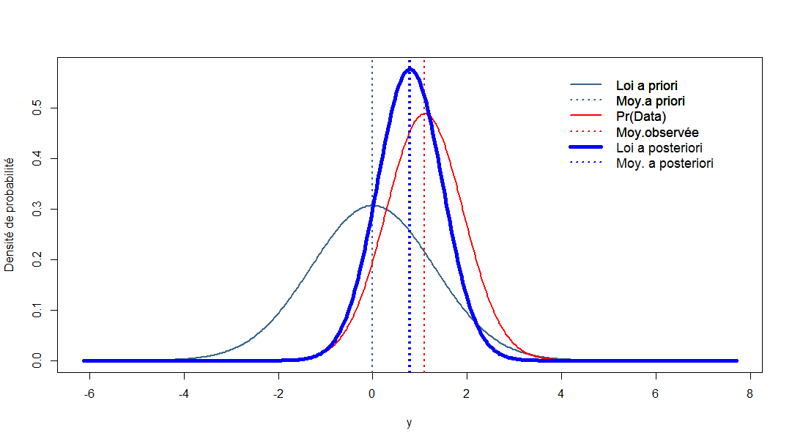

2 Qu’est-ce que SHIBA ?
SHIBA est une interface graphique permettant de réaliser des analyses bayésiennes via le logiciel de statistiques R et les packages associés sans avoir à coder les instructions nécessaires pour obtenir ces analyses.
SHIBA nécessite cependant de connaître un minimum de notions sur ce que sont les méthodes bayésiennes. La présente page d’aide est là pour vous donner les connaissances nécessaires à une compréhension élémentaire de ces méthodes et à l’utilisation de SHIBA.
Cet outil est proposé sans aucune garantie de validité sur les résultats.
Ce logiciel est mis à votre disposition gracieusement par les Hôpitaux Universitaires de Strasbourg (HUS) et l’Université de Strasbourg (Unistra). Ni les HUS ni l’Unistra ne pourront pas être tenus pour responsables des résultats produits par l’outil ainsi que de ses mésusages. Afin de se conformer à la règlementation nationale et européenne sur la protection des données à caractère personnel, nous vous demandons de n’utiliser que des données anonymisées.
2.1 Fonctionnement général de SHIBA
SHIBA dispose de plusieurs onglets. Les onglets se répartissent en deux grandes catégories : ceux consacrés à la description des données et ceux consacrés à l’inférence bayésienne, univariée et multivariée.
Le premier onglet est consacré à l’importation et à la lecture de la base de données. Une base de données saisie dans un tableau sous la forme d’un tableur avec comme extension : .xlsx, .ods, .txt ou .csv) devra être chargée à l’aide de ce premier onglet. Une fois la base de données ouverte dans SHIBA, vous pourrez choisir l’onglet correspondant aux analyses à réaliser : descriptif puis inférence, uni- ou multivariée.
Dans chaque onglet, en cliquant sur le bouton « AIDE et détails » vous accéderez à une aide spécifique de l’onglet.
Note
Cette application n’enregistre ni votre activité, ni vos données. A la fermeture de l’application, vous ne pourrez pas revenir ou récupérer les analyses effectuées. Il vous faudra recharger la base et recommencer les manipulations.
2.2 Vocabulaire de base
La réalisation d’analyse statistique dans SHIBA suppose de connaître quelques éléments de vocabulaire statistique.
- Paramètre : tout ce qui peut quantifier un effet et que l’on peut exprimer sous forme numérique : une proportion, une moyenne, un taux d’incidence, une différence de proportions ou de moyennes, un coefficient de corrélation, un odds ratio (OR) ou son logarithme, un risque relatif (RR), la pente d’une droite de régression, etc.
- Population : une population est un ensemble exhaustif d’individus statistiques sur lequel on souhaite estimer la valeur d’un paramètre. En pratique, on ne connait jamais la valeur exacte de ce paramètre dans la population car celle-ci n’est pas connue dans sa totalité. La valeur du paramètre dans la population peut seulement être estimée statistiquement via une méthode d’inférence à partir d’un échantillon. SHIBA utilise exclusivement de l’inférence bayésienne dans laquelle le paramètre dans la population est estimé à partir des données observées sur un échantillon au cours d’une expérimentation et de la connaissance que vous aviez, avant de mener l’expérimentation, sur les valeurs de ce paramètre.
- Echantillon : un échantillon est un ensemble de sujets extraits de la population étudiée, ensemble sur lequel on relève des données et que l’on utilise pour estimer la valeur du paramètre d’intérêt dans la population.
- Données : on appelle donnée toute mesure réalisée et observée sur un échantillon au cours d’une expérimentation. Une donnée peut être qualitative ou quantitative.
2.3 Principes de la statistique Bayésienne
2.3.1 Notion d’hypothèse scientifique et d’hypothèse statistique.
Une théorie sur un phénomène permet de formuler une hypothèse scientifique sur un paramètre d’intérêt \(\theta\). Cette hypothèse scientifique sur le phénomène va être traduite en une hypothèse statistique sur la valeur du paramètre exprimant le phénomène. Cette valeur sera soumise à un test qui vise à valider ou invalider l’hypothèse scientifique. L’hypothèse scientifique est vraie ou fausse mais l’hypothèse statistique, elle, est associée à une probabilité d’être vraie. Le test statistique suppose le recueil de données (les « évènements » de la théorie des probabilités) qui permettront en retour d’estimer la probabilité que cette hypothèse statistique soit vraie. Lorsque cette probabilité est suffisamment élevée (basse) on pourra considérer que l’hypothèse scientifique est validée (invalidée).
2.3.2 Notion de probabilité.
La définition la plus couramment utilisée de la probabilité est une définition dite fréquentiste dans laquelle la probabilité est définie comme un nombre de cas favorables sur un nombre de cas possibles, mesurés sur un échantillon. Par exemple, dans un échantillon de 100 sujets, 80 sont guéris et on dit que la probabilité de guérir est de 0,8 (valeur entre 0 et 1) car la fréquence de guérison observée est de 80/100.
Cette définition ne permet cependant pas de connaitre la probabilité qu’une hypothèse sur le paramètre soit vraie car elle définit la probabilité de l’évènement E sachant une valeur hypothétique du paramètre dans la population et pas la probabilité du paramètre dans la population sachant les données observées. Scientifiquement, c’est la valeur du paramètre dans la population qui est l’objet d’intérêt. La valeur de ce paramètre n’est en général pas connue de manière précise puisque l’on cherche à l’estimer. La théorie bayésienne lui attribue alors une loi de probabilité dite a priori, traduisant le niveau de connaissance sur cette valeur ce qui constitue une définition épistémique de la probabilité où la probabilité est interprétée comme une quantité de connaissance dont on dispose sur une hypothèse sur le paramètre dans la population. La statistique bayésienne repose explicitement sur cette définition épistémique de la probabilité même si elle utilise également les définitions classiques au cours des calculs. La connaissance pré-expérimentale sur la valeur du paramètre est exprimée dans une loi de probabilité dite a priori car spécifiée en amont de l’acquisition de données expérimentales. Après acquisition de ces données expérimentales, la connaissance post-expérimentale sur la valeur du paramètre est mise à jour par le théorème de Bayes et cette connaissance est contenue dans la loi de probabilité dite a posteriori du paramètre. Cette loi a posteriori contient toute l’information disponible sur le paramètre d’intérêt.
Le théorème de Bayes peut s’énoncer de la manière suivante : après l’expérimentation, la connaissance a posteriori sur le paramètre \(\theta\) est proportionnelle à la connaissance a priori sur \(\theta\) multipliée par la probabilité des données D :
\[\Pr(\theta|D) \propto Pr(\theta) \times \\Pr(D| \theta)\]
En synthèse, la statistique bayésienne permet la mise à jour d’une connaissance probabiliste sur un paramètre à l’aide d’observations.
2.3.3 Les trois éléments d’une analyse bayésiennes sont donc :
La loi a priori : c’est une loi de probabilité (par exemple une loi normale) qui exprime toute la connaissance dont on dispose sur le paramètre avant la collecte des données pour chaque analyse, il faut spécifier les caractéristiques de la loi a priori (par exemple sa moyenne et sa variance dans le cas de la loi normale) exprimant la connaissance disponible sur \(\theta\). C’est une étape très importante dans l’inférence bayésienne et SHIBA vous permettra de la passer assez facilement.
La vraisemblance : c’est la probabilité des données observées conditionnellement aux valeurs a priori du paramètre. Vous n’avez pas à vous souciez de la vraisemblance et elle n’apparait pas dans les résultats.
La loi a posteriori : c’est la loi de probabilité qui exprime toute la connaissance dont on dispose sur le paramètre \(\theta\) étudié après la collecte des données. Cette loi a posteriori est calculée et fournie par SHIBA. Elle permet de donner une estimation ponctuelle et par intervalle de \(\theta\) ainsi que de calculer la probabilité que \(\theta\) soit supérieur ou inférieur à un seuil ou contenu dans un intervalle spécifié en amont. Elle est également la base de test statistique sur la valeur de \(\theta\).
Dans le graphique suivant, la loi a priori est en bleu, la vraisemblance est en rouge, la loi a posteriori est en bleu vif.

Le paramètre d’intérêt est parfois le paramètre d’une loi de probabilité. Par exemple, la moyenne est le paramètre de moyenne d’une loi normale. Mais il est parfois le résultat d’une transformation d’un autre paramètre. Lors de la comparaison de deux proportions, l’OR ne dispose pas d’une loi a priori propre : il n’est pas le paramètre d’une loi a priori. Sa loi a posteriori est en fait recalculée à partir de la loi a posteriori des proportions dans chaque groupe ou du paramètre d’une régression logistique. Dans tous les cas, la loi a priori du paramètre est mise à jour par les données pour fournir une loi a posteriori.
Dans les différents onglets de SHIBA, la démarche statistique globale est à chaque fois la même. Pour un modèle donné (une proportion, une régression logistique, etc.), il faudra spécifier une loi a priori pour chacun des paramètres d’intérêt ou des éléments composant le paramètre d’intérêt (pour un risque relatif ou un odds-ratio par exemple). Dans les modèles multivariés, il faudra spécifier une loi a priori pour le paramètre de chaque variable incluse dans le modèle. SHIBA effectue le calcul de la loi a posteriori du ou des paramètres et permet de réaliser les tests que vous aurez éventuellement spécifiés.
2.3.4 Notion de test sur le paramètre : test par rapport à un seuil et test à deux intervalles (2IT).
La valeur d’un paramètre \(\theta\) est connue à travers sa loi a posteriori. Il est possible de tester la valeur de \(\theta\) par rapport à une valeur de référence, en calculant la probabilité que la valeur de \(\theta\) soit supérieure à une valeur seuil donnée. Dans les onglets des inférences univariée et multivariée vous pouvez spécifier une valeur pour chaque paramètre. Il est également possible de tester si la valeur de \(\theta\) est contenue dans un intervalle d’intérêt. Le principe du test à deux intervalles (voir ici) consiste à spécifier deux intervalles d’intérêt pour la valeur de \(\theta\) : un intervalle dit HA spécifiant des valeurs de \(\theta\) pour lesquelles on considérera que l’effet est absent (A) ou au moins négligeable dans le contexte, et un intervalle HP spécifiant des valeurs de \(\theta\) pour lesquelles on considérera que l’effet est présent (P), confirmant l’hypothèse scientifique. Les pages d’inférence univariée et multivariée dispose de boutons et menus pop-up permettant de spécifier les bornes de chacun des deux intervalles HA et HP.